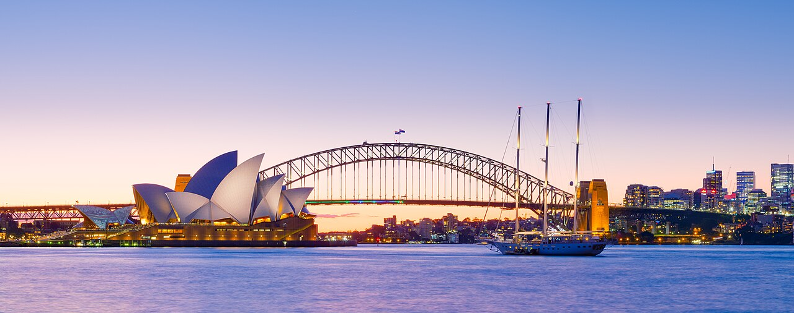

Sydney in a Port Day: Circular Quay on Foot, and a Ferry to Manly

Sydney is the easiest big-city port day in the Pacific, because the ship drops you in the middle of the postcard. Docked at Circular Quay, the Opera House is a five-minute walk, the Harbour Bridge is right there, and the Rocks, the Botanic Garden, and the ferry wharves are all within a kilometre. You do not need a tour bus, a taxi, or a plan more complicated than comfortable shoes and a ferry timetable. The only decision that matters is which terminal you are at — and whether the day stretches far enough for Manly.
Arriving: Circular Quay vs White Bay
Most large cruise ships dock at the Overseas Passenger Terminal (OPT) at Circular Quay, in the heart of the harbour. Walk off the ship and you are standing between the Opera House and the Bridge — the whole day starts there. Some ships dock at White Bay, about 6 km out: there is no train, and a taxi into Circular Quay runs roughly A$45. If you are at White Bay, take the taxi in the morning and the same back with time to spare; the saving from a bus is not worth the schedule risk on a port day.
Immigration is handled in the terminal. Before leaving, confirm the all-aboard time — Sydney is a city where it is easy to lose track of time on a ferry, and the harbour is at its best exactly when you should be heading back.
The morning: the Quay, the Opera House, the Rocks
Start at the Opera House. The guided tour (roughly A$48–55) runs about an hour and is the way to see inside the sails — book ahead if you want a morning slot, because the popular times sell out. If you skip the tour, the outside is still the sight: walk the podium, look back at the Bridge, and take the photo everyone takes. Then walk west through the Rocks, Sydney's oldest neighbourhood: sandstone lanes, weekend markets, old pubs, and the Museum of Contemporary Art on the waterfront. The Rocks Discovery Museum is small, free, and the fastest way to understand what you are walking through.
From the Rocks, cross under the Bridge approach and walk the harbour edge to the Royal Botanic Garden. The garden is free, and the Mrs Macquarie's Chair viewpoint — a carved sandstone seat on a point jutting into the harbour — frames the Opera House and the Bridge together in one shot. It is about a 20-minute walk from the Quay, flat most of the way, and the best free view in the city.
Lunch: the Quay or the Rocks
Eat near the water. The Rocks has pubs with proper food and harbour-side cafes where lunch runs roughly A$20–35 per person; Circular Quay's restaurants are pricier and more tourist-facing, but the setting is the point. If you want the local move, grab a meat pie or a fish-and-chips takeaway and eat it on the Quay steps watching the ferries come and go. Coffee is taken seriously here — order a flat white, not a latte, and you will blend in.
The afternoon: a ferry to Manly (or Bondi)
If the ship stays past mid-afternoon, the Manly ferry is the best use of the second half. Ferries leave Circular Quay every 20–30 minutes, take about 20 minutes, and cost roughly A$9.20 on an Opal card — and the ride itself is the attraction, cutting straight across the harbour and out through the Heads. Manly has a surf beach, a promenade of cafes, and a much more relaxed pace than the city side; an hour ashore is enough, and the return ferry puts you back at the Quay with the skyline in front of you.
The alternative is Bondi: bus or train-and-bus from the city, about 45 minutes each way, for the famous beach and the cliff walk to Coogee. It is a good afternoon, but it eats more of the day than Manly, and the return traffic can be slow — only do it if the ship's departure is late and the buffer is real.
Getting around
On foot, mostly — the whole Circular Quay area is walkable, and that is the point. For anything further, the Opal card (or a contactless bank card or phone) covers ferries, trains, buses, and light rail, with a daily cap of roughly A$19.30 on weekdays — once you hit it, the rest of the day's travel is free. Ferries are the scenic option and run on time; trains are the fast option for anywhere inland. Taxis and rideshare fill the gaps, but in the downtown area they are rarely faster than walking or the ferry.
What a port day costs (approximate, per person)
- Opal / contactless travel for the day: roughly A$10–20 (capped at about A$19.30 on weekdays)
- Opera House tour: roughly A$48–55
- Manly ferry return: roughly A$18–19 on Opal
- Lunch at the Rocks or the Quay: roughly A$20–35
- The Rocks, Botanic Garden, harbour walk, Mrs Macquarie's Chair: free
- Comfortable total without shopping: roughly A$60–110
Tips for cruisers
- Check the terminal first. Circular Quay means the day starts on foot; White Bay means a roughly A$45 taxi each way, and the return needs booking in time.
- Book the Opera House tour ahead. Morning slots sell out, and the walk-up queue is not how you want to spend the best hours.
- Use a contactless card for Opal. No need to buy a card — tap your bank card or phone on ferries and trains, and the daily cap still applies.
- Watch the ferry times, not just the ship's clock. The last Manly ferry back is not the same as the ship's departure — leave Manly with at least an hour of buffer.
- Sun protection is not optional. Sydney sun is strong even on a cloudy day; a hat and sunscreen belong in the day bag.
Prices and hours are approximate and were checked in November 2026; fares and ticket prices change, and the Opal daily cap varies by day. Confirm on the day if a price decides the plan.